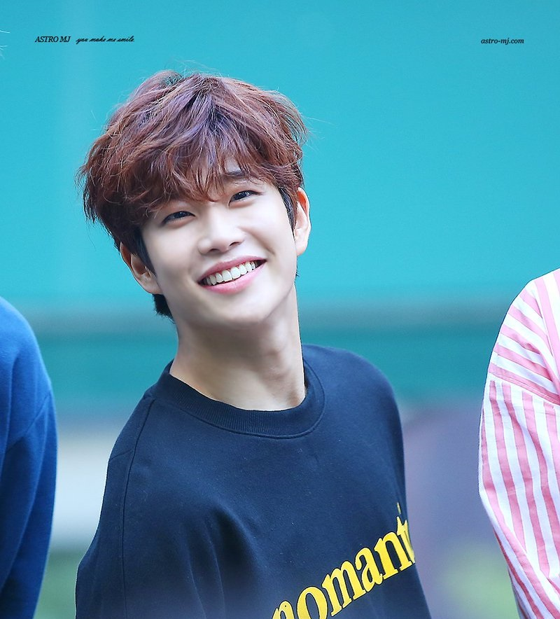

FUN FACTS!

- Shoe Size: 255
- Personality: he jokes a lot and is mischievous.
- His favorite colors are Mint and Yellow.
- His favorite Marvel’s character is Iron Man.
- In 2015 appeared in Fantagio Web Drama “To Be Continued”
- The first person he befriended when he joined Fantagio was Sanha.
- His nickname is “The Happy Virus”, because he’s always laughing.
- Contestant of 2012 JYP Ent. x HUM Audition (won a one year scholarship from Seoul National University)
- Auditioned for JYP Ent. with iKON Donghyuk, Yang Hongseok, and Kim Jisoo (actor)
- MJ’s favorite superhero: Iron Man (Billboard x MMT Astro Interview)
- He has a baby belly. And he doesn’t want to get rid of it for abs because he says its more soft to lay on your belly like that!
- He wanted to be an architect when he was younger, however he gave up the dream when he realized how much studying was involved.
- His role model is actor & singer Lee Seung-Gi
|